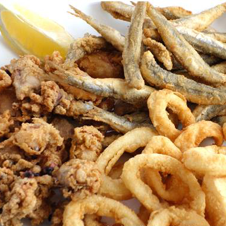
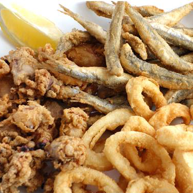
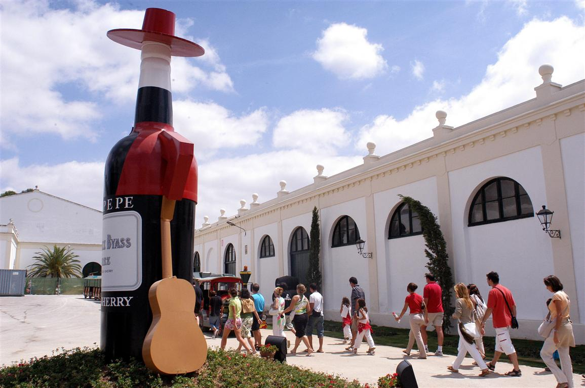
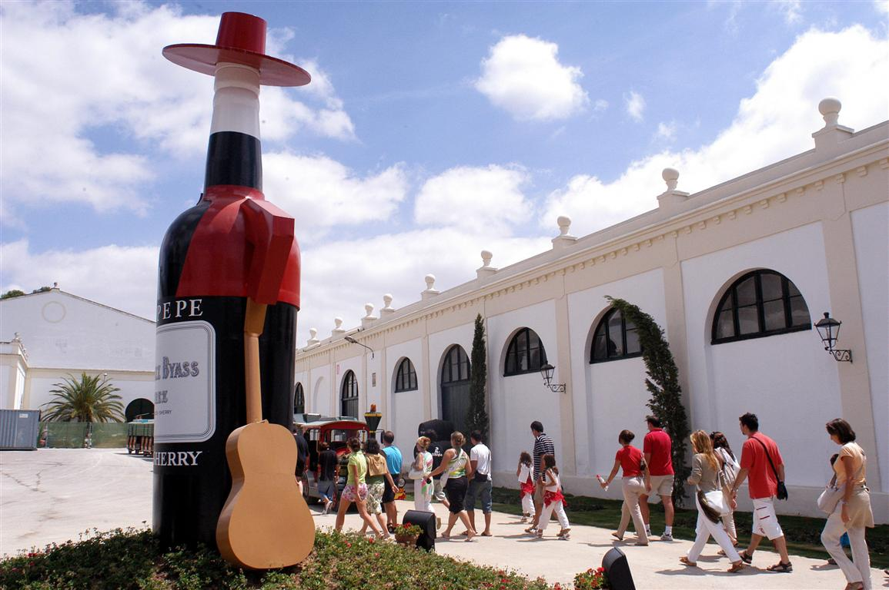

Al igual que en el resto de la provincia de Cádiz y otras
tierras andaluzas, los pucheros, guisos y ollas son toda una
institución en Jerez de la Frontera.
Buenos ejemplos son el menudo con garbanzos o el puchero
andaluz, que se prepara también con garbanzos, distintas carnes,
verduras y hortalizas. Pero si hay un plato delicioso, sencillo
y de los llamados "baratos" es el clásico ajo caliente de Jerez.
Lo más habitual es consumir esta elaboración en forma de tapa o
de ración, en las ventas que salpican los caminos y carreteras.
Se trata de una especie de sopa de ajo compacta, donde los
ingredientes principales son el pan del día anterior, el ajo, el
aceite de oliva, los pimientos verdes y el tomate. Hoy día se le
suelen añadir también embutidos o tocino, aunque la receta
original no los llevaba; el ajo caliente se consume
tradicionalmente una copita de fino, lo que, según dicen,
incrementa su sabor. Los vinos de Jerez se utilizan a menudo en
la cocina de la zona para las distintas recetas; un buen ejemplo
es el de los riñones al jerez, pero también el de los
alcauciles, que es el nombre que allí reciben las clásicas
alcachofas.
El pescado también es un ingrediente clásico en la cocina
jerezana, lo cual es lógico teniendo en cuenta la cercanía de
las costas atlánticas, que surten a la provincia de Cádiz de
deliciosas especies. Sin duda, el pescaíto frito es uno de los
platos estrella en tascas y bares, donde se consume
habitualmente como ración. Pero también están deliciosas las
tortillitas de camarones y los pescados a la brasa o la parrilla
como urtas, sargos, mero, salmonetes... Sin olvidarnos del
excepcional atún de almadraba, y de estupendos mariscos como el
bogavante, los langostinos de Sanlúcar de Barrameda, la gamba
que llega de la cercana Huelva, las coquinas, los chocos
(calamares) con papas y muchas otras exquisiteces marinas.
 
  
 Pasando ya al recetario de carnes, hay que señalar que en la
serranía y las tierras jerezanas la carne de cerdo es parte
fundamental del recetario. La matanza se realiza habitualmente
en los cortijos desde tiempos inmemoriales, de la cual salen
elaboraciones exquisitas en forma de embutidos (o chacinas en el
hablar de la tierra). La zona de los Alcornocales, además, es
también territorio de caza y consumo de venado.
Pero si hay algo que destaca en la producción gastronómica
jerezana son sin duda sus vinos. Ya en tiempos de los fenicios
se cultivaba la vid en tierras de Jerez de la Frontera, e
incluso durante los siglos de dominación árabe se siguieron
elaborando y consumiendo los caldos. Sin embargo, es con la
Reconquista cuando se lanza del todo la producción y difusión
del vino de Jerez; su llegada a Inglaterra lo puso allí de moda,
hasta nuestros días. La Denominación de Origen
Jerez-Xérès-Sherry data de la primera mitad del siglo XX. Además
del vino de Jerez, también se consumen con profusión los frescos
y deliciosos finos, el brandy de Jerez y el excelente vinagre
que se elabora a partir de los caldos.